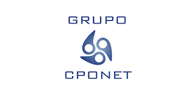

15:00
INICIO
24 DE SEPTIEMBRE DE 2026 · 15:00 H
Un encuentro para conocer casos de uso, experiencias y resultados reales, y analizar cómo la orquestación está transformando Procurement y hacia dónde evoluciona la función de Compras.
24 de septiembre de 2026 · 15:00 h
La evolución de la Inteligencia Artificial, la automatización y los modelos de orquestación está abriendo nuevas posibilidades para conectar procesos, sistemas y equipos, transformando la manera en que Procurement se relaciona con Finanzas y con el conjunto de la organización.
En este escenario, disponer de una Data Foundation sólida, capaz de integrar y contextualizar información procedente de diferentes fuentes, se convierte en un elemento clave para avanzar hacia decisiones más ágiles, fiables y estratégicas.
La tecnología permite automatizar tareas y analizar grandes volúmenes de información, pero el verdadero desafío está en orquestar todas estas capacidades para que trabajen de manera coordinada.
Avanzamos hacia un modelo en el que los agentes ejecutan, la orquestación conecta y gobierna los procesos, y las personas mantienen el liderazgo, el criterio y la capacidad de decisión.
Pero ¿cómo se traslada este modelo a la realidad de una organización global? ¿Qué papel desempeñan Compras y Finanzas? ¿Qué procesos pueden transformarse y qué resultados puede generar la orquestación agéntica?
En este contexto, el próximo 24 de septiembre se celebrará la sesión “Compras y Finanzas: Orquestación en Acción”, un encuentro para conocer casos de uso, experiencias y resultados reales.
Durante la sesión analizaremos cómo la orquestación está transformando Procurement, su impacto en la relación entre Compras y Finanzas y hacia dónde evoluciona la función de Compras.
Una iniciativa de CPOnet y ORO Labs.
Consulta los principales momentos del encuentro y descubre cómo se desarrollará la sesión.
Casos de uso, experiencias y resultados reales sobre la aplicación de la orquestación en Procurement y su relación con Finanzas.
Enterprise Account Executive en ORO Labs, encargada de moderar esta sesión.

Enterprise Account Executive · ORO Labs
Claudia Cervantes será la encargada de moderar el encuentro y conducir la conversación sobre la evolución de Procurement, la relación entre Compras y Finanzas y las nuevas posibilidades de la orquestación agéntica.
Ver perfil en LinkedInGrupo CPOnet organiza este webinar con el objetivo de compartir conocimiento, experiencias y nuevas perspectivas sobre la evolución de la función de Compras y su relación con Finanzas.

Grupo CPOnet es la comunidad de referencia para profesionales y directivos de Compras en España, impulsando el conocimiento, la innovación y la transformación de la función de Procurement.
Este webinar cuenta con el patrocinio de ORO Labs, compañía especializada en tecnología y orquestación inteligente para transformar la función de Compras.

Intelligent Procurement Orchestration
ORO Labs ayuda a las organizaciones a modernizar sus operaciones de Compras mediante tecnología, automatización y orquestación inteligente.
Su plataforma permite simplificar procesos, eliminar fricciones y mejorar la gestión de las solicitudes de Compras, facilitando una función de Procurement más ágil, conectada y estratégica.
Conocer ORO LabsConsulta el documento oficial del webinar directamente desde esta página.
24 de septiembre de 2026 · 15:00 h
Conéctate al encuentro a través de Microsoft Teams.